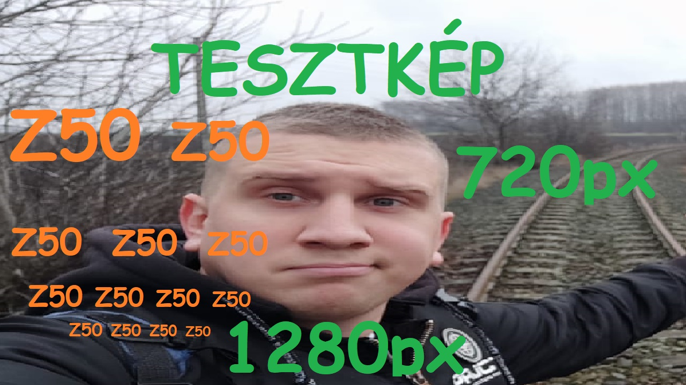

Cucc
Bekezdés 1
Muck egy építkezési és túlélőjáték, amelyet a Dani készített. Ez az indie játék a túlélésre és az erőforrások gyűjtésére helyezi a hangsúlyt egy procedurálisan generált világban. A Muck-ban a játékosok egy szigeten találják magukat, ahol számos kihívással kell szembenézniük. A játékosoknak meg kell találniuk az ételt és az erőforrásokat, építményeket kell létrehozniuk és fejleszteniük kell a karakterüket a túlélés érdekében. Az erőforrások gyűjtése és az építkezés kulcsfontosságú a Muck-ban. A játékosoknak bányászniuk kell az ásványi anyagokat, faanyagot kell gyűjteniük, és más természeti erőforrásokat kell megszerezniük. Ezeket az erőforrásokat felhasználva építményeket hozhatnak létre, mint például otthonokat, fegyvereket, védelmi szerkezeteket és egyéb hasznos eszközöket. A játékban a karakterek fejlődése is fontos szerepet játszik. A játékosok képességeket és felszereléseket szerezhetnek, amelyek növelik az erejüket és segítenek a szigeten fennmaradásban. A karakterfejlődés lehetőséget ad a játékosoknak, hogy testre szabják a játékstílusukhoz legjobban illő stratégiát. Muck egy izgalmas és kihívást jelentő játék, ahol a játékosok folyamatosan küzdenek a túlélésért a dinamikus világban. A procedurálisan generált térképek változatosságot és új kalandokat kínálnak minden játékmenetben. Az építési lehetőségek és a karakterfejlődés lehetővé teszik a játékosoknak, hogy saját túlélési stratégiájukat alakítsák ki és hozzanak létre egyedi építményeket. Összességében a Muck egy élvezetes és izgalmas játékélményt nyújt, amelyben a játékosoknak kreativitásra és stratégiai gondolkodásra van szükségük a túlélés érdekében.